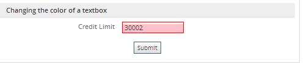
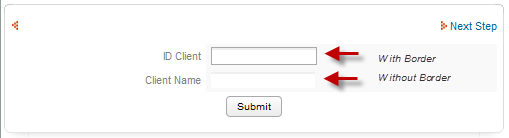
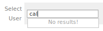
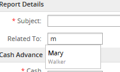
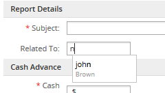
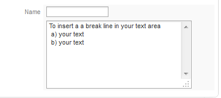

Overview
ProcessMaker offers six different types of fields for inputting text into a form: textboxes, currency boxes, percentage boxes, passwords, suggest boxes and textareas.
Recommendations to copy Numeric Fields
Before start creating fields it's important to follow the above recommendation: Unlike other type of fields "Numeric Fields" which are defined with a mask, can't be copied (using cntrl+c) into another field with the same characteristics. Numeric fields can be copied only if they don't have a mask defined on its their XML definition. Take the following numeric Fields in consideration:
- textboxes: if a textbox is defined as Integer or Alphanumeric with a mask defined.
- currency boxes: if it has a mask defined.
- percentage boxes: if it has a mask defined.
 Textbox
Textbox
A textbox is a field designed to input one line of text.
Properties
- Field Name *Required
- Label
Behavior
Appearance
Data
Note:Dynaforms based on PM Tables set varchar fields as textboxes by default. Nevertheless textboxes only support 50 character, so if needed longer strings change the definition of the textbox to textarea.
Text transform to
This option transforms any entered text automatically to upper or lowercase.
XML definition:
- < NAME ... strto="LOWER|UPPER" ...> ... < /NAME>
Accessing text fields with JavaScript
The value entered into all types of text fields can be accessed through their value property. To read the value in a text field:
To set the value in a text field:
All text entered into text fields, including currency and percentage boxes, is stored in the HTML as strings, so remember to convert the values to integers or floating point numbers before before doing mathematical operations with them in JavaScript.
To change the appearance of a text field at run-time, its style properties can be set using JavaScript. For example, to change the text alignment of a text field to right justified:
To see a complete listing of the style properties for a particular field, insert this JavaScript code snippet in a DynaForm:
For example, to change the border color of a text field named "CreditLimit" to red and its background color to pink if the user enters a value greater than 30000:
if (parseInt(getField("CreditLimit").value) > 30000) {
getField("CreditLimit").style.backgroundColor = "pink";
getField("CreditLimit").style.borderColor = "red";
}
else {
getField("CreditLimit").style.backgroundColor = ""; //set back to default
getField("CreditLimit").style.borderColor = ""; //set back to default
}
}
leimnud.event.add(getField("CreditLimit"), 'change', checkOverLimit);
The result will be:

If the requirement is to hide the border of a textbox, use the following code:
The result will be:

Changing text fields style using CSS
Each field added on a Dynaform uses its own class with a default style, check the Common ProcessMaker Classes to identify which style must be changed.
At this point, there are two ways of modifying a text field style:
1. If it is required to apply the style for all places where the text field is used, open style.css file located at:
On the above path files for classic skin are located, if a different skin is used check this documentation
Look for .Formlabel class and modify the style:
{
color:#808080;
text-align:right;
padding-right:5px;
/* width:180; */
font-weight: bold; // added this
}
2. If it is required to apply the style only for the current dynaform, add a css code with a class, in the case of the example labeloption, at the end of the HTML code:
<style>
.labeloption {
background-color:#FFFFFF;
color:green;
border:0px solid #000000;
font-family:"Trebuchet MS","Lucida Sans Unicode",Arial,sans-serif;
font-size:12pt;
font-weight: bold;
text-align:right;
}
</style>
{/literal}
Finally, go to the HTML code, on the field where the style will be applied add the labeloption class as follows:
<tr>
<td class="labeloption" width="{$form_labelWidth}"><font color="red">* </font>{$APPLICANT_NAME}</td>
<td class="FormFieldContent" width="{$form_fieldContentWidth}">{$form.APPLICANT_NAME}</td>
</tr>
.....
 Currency
Currency
A currency is a type of textbox designed to input a quantity of currency (money) into a DynaForm.
Unlike a normal textbox, currency boxes are limited to accept only integers or real numbers. To determine which type of numbers are allowed, select either "Int" or "Real" for the Validateproperty. A mask can be used to limit the kind of input and autoinsert characters, but remember that currency boxes only allow the input of characters which are 0123456789,.-+ (numbers, commas, periods, minus signs and plus signs). To force all input to have two decimal numbers, select "Real" for "Validate" and set the "Mask" to "###,###,###,##0.00" (or "###.###.###.##0,00" if in Europe or Latin America).
Properties
- Field Name *Required
- Label
Behavior
Appearance
Operations
Data
Recommendations:
- On recent versions of ProcessMaker the use of the default mask "###,###,###,###;###,###,###,###.## $" is no longer used, the format ; (semicolon) to use either one mask or the other is not supported, it is recommended to use only one mask for currency boxes.
- The use of negative numbers is available from version 2.0.45 but only with real numbers.
Currency property
Specifies the currency symbol, such as '$', '€' or '¥'. Note that this property does not allow the currency symbol to be used inside of the currency box, so it is really only good as a reference to the process designer.
XML definition:
- < NAME ... currency="CURRENCY-SYMBOL" ...> ... < /NAME>
Accessing Currency with JavaScript
Although the input of a currency box is limited to integers and real numbers, the input is stored as a string in the DynaForm. To do JavaScript calculations, it may be necessary to first remove any dollar signs and any extra characters inserted by the mask with the removePercentageSign() function, and then parseInt(), parseFloat() or Number() to Converting values. convert from a string to a number.
For example, to add the "shipping" currency field to the "price" currency field and then insert it into the "total" field:
var price = removeCurrencySign(getValueById("price"));
var tax = removeCurrencySign(getValueById("shipping"));
var total = Number(price) + Number(tax);
getField("total").value = roundNumber(total, 2).toFixed(2);
}
leimnud.event.add(getField("price"), 'change', setTotal);
leimnud.event.add(getField("ship"), 'change', setTotal);
setTotal(); //execute when the DynaForm loads
 Percentage
Percentage
A percentage is a type of textbox which restricts the input to numbers to form percentages.
Input is limited to either integers or real numbers, depending on whether "Int" or "Real" is selected for "Validate". To use European or Latin American style numbers with a comma as the decimal separator, change the mask from the default "###.## %", to "###,## %". To force the input to always have two decimal numbers, change the mask to "##0.00 %".
Properties
- Field Name *Required
- Label
Behavior
Appearance
Operations
Data
Accessing Percentages with JavaScript
Although the input of a percentage box is limited to integers and real numbers, the input is stored as a string in the DynaForm. To do JavaScript calculations, it may be necessary to first remove the percentage sign and any extra characters inserted by the mask with the removePercentageSign() function, and then use parseInt(), parseFloat() or Number() to Converting values. convert from a string to a number.
For example, to multiply the "tax" percentage field by the "price" currency field and insert it into the "total" field:
var price = removeCurrencySign(getValueById("price"));
var tax = removePercentageSign(getValueById("tax"));
if (price != "" && tax != "") {
var total = Number(price) * Number(tax);
getField("total").value = roundNumber(total, 2).toFixed(2);
}
else {
getField("total").value = "";
}
}
leimnud.event.add(getField("price"), 'change', setTotal);
leimnud.event.add(getField("tax"), 'change', setTotal);
setTotal(); //execute when the DynaForm loads
 Password
Password
A password is a type of textbox designed to input passwords into DynaForm. The input is displayed as ******* (asterisks), so observers can't easily glimpse passwords.
Properties
- Field Name *Required
- Label
Behavior
Appearance
The input of passwords is stored as unencrypted text, meaning that it is only good for preventing the casual onlooker from stealing passwords, but shouldn't be relied as a secure method to prevent password theft. For sensitive passwords, either add JavaScript code to the DynaForm to immediately encrypt them with MD5 or SHA1 or set up a Secure Sockets Layer (SSL) or Transport Layer Security (TLS) connection to the ProcessMaker server.
 Suggest box
Suggest box
Suggest boxes allow any value to be entered into the field like a traditional textbox, but they also provide a list of suggested values which is filtered as the user types. Suggest boxes help guide users to reuse certain values in fields, but still provide the flexibility to enter new values. Suggest box is a new feature available since version 1.2-3306Beta.
Properties
- Field Name *Required
- Label
Behavior
Appearance
Autosuggest Behaviour
- Sql Connection *Required
- Sql *Required
- Max Results
- Show no results
- Store new entry
- Search Type
- Table *Required
- Primary Key *Required
- Type *Required
As the user types into the field, the suggest box will display a list of options for 5 seconds which start with the typed value. The suggest box progressively filters the list of proffered options with each new character typed, so the list of options is narrowed down to more easily find the desired option. To select an option, just click on it in the list.
The list of suggested options is created by an SQL SELECT statement, which queries a database for the "id", "value" and "description" fields. The "id" is the value that gets stored when the user selects an option (unless the "Value" option is selected for the "Save on DynaForm" property). The "value" is the text displayed to the user for each option. The "description" is the text displayed under each option in a smaller font. Both the "value" and "description" are optional, but the "id" is required. The options will be filtered based on searches in the "value" field (or the "id" field, if it is the only field returned by the SQL query).
To create an SQL SELECT query, first select a database to query in the "Sql Connection" dropdown box. (To make a database appear in the list, first setup a Database Connection for the database.) If querying one of the three MySQL databases for the current workspace, select "Workflow" to use the wf_< WORKSPACE> database, select "RBAC" to use the rb_< WORKSPACE>database, or select "REPORT" to use the rp_< WORKSPACE> database.
Then, enter an SQL SELECT query. The first field retrieved is treated as the id for the option and it must be unique. The second field is the "value" and the third field is the "description". All other retrieved fields are ignored. To join together multiple fields in the "value" or "description" use the CONCAT() function. Do not include the database name in the SQL SELECT statement.
For example, to create a suggest box which displays the ProcessMaker users, select the "Workflow" option for the "Sql Connection" and use the following SQL statement:
In this case, the USR_UID field will be the id, the USR_USERNAME will be the value, and CONCAT(USR_FIRSTNAME, ' ', USR_LASTNAME) will be the description for each option.

Save on DynaForm
This property provides the option to store either the "Id" or the "Value" of the option selected by the user. The "Id" is the default. If the user enters text in the suggest box, rather than selecting a suggested option from the list, then the entered text will be saved.
XML Definition:
- < NAME ...>...< /NAME>
Max Results
Sets the maximum number of options to display when filtering the matching list of options.
XML definition:
- < NAME maxresults="NUMBER" ...>...< /NAME>
Show no results
Activate this option to display the message "No Results!" when no labels are found in the database which matches the typed-in text.

XML definition:
- < NAME shownoresults="0|1" ...>...< /NAME>
Store new entry
Activate this option to allow the user to save the new entries that are typed in the suggest box, if they are not already in the table. When selected, this option displays three dropdown boxes to select the Table where the new value will be inserted and the Primary Key field and the data Type which will be inserted.
XML definition:
- < NAME store_new_entry="0|1" ...>...< /NAME>
Search Type
Available Version: From 2.5.2
Use this option to select a search type for the results displayed on the suggest box.
XML definition:
- < NAME searchtype="*searchtype*|*searchtype|searchtype*" ...>...< /NAME>
Select one of the 3 options listed on this attribute to filter results according to the information you need.
- Results that contain the entered text: It searches the complete text entered in the suggest box. It doesn't search compound words. For instance, searching John we will have:

- Results that start with the entered text: It searches all results that begin with the text entered in the suggest field. for instance if we want to search all names that begin with the letter M, we will have:
- 
- Results that finish with the entered text: It searches all results that end with the text entered in the suggest field. for instance if we want to search all names that end with the letter n, we will have:
- 
Table
If storing new entries, select the table where the new value will be inserted. Only tables found in the SQL query will be presented in the list.
XML definition:
- < NAME ... table_data="TABLE-NAME" ...>...< /NAME>
Primary Key
If storing new entries, select the field which will be the primary key for the new entry. The text which is entered into this field will be stored in this field.
XML definition:
- < NAME ... primary_key_data="FIELD-NAME" ...>...< /NAME>
Type
The type of data which is contained in the field selected for the Primary Key. Only Varchar (a variable number of characters) or an Integer (a whole number) can be selected.
XML definition:
- < NAME ... primary_key_type_data="varchar|int" ...>...< /NAME>
Accessing Suggest Boxes with JavaScript
A suggest field has 2 input fields:
- A hidden field whose ID is
form[field-name]and it can be accessed withgetField("field-name"). This hidden field holds the value of the selected option (if the user selects an option). If the user types in a value which isn't one of the options in the list, then the value of this hidden field is""(empty string).
- A visible field whose ID is
form[field-name_label]and it can be accessed withgetField("field-name_label"). This visible field holds the label of the selected option or the value typed in by the user.
Example 1:
The following JavaScript clears a suggest box named "enterUser", when a button named "clearUser" is clicked:
getField("enterUser").value = '';
getField("enterUser_label").value = '';
}
Example 2:
For example, to change the background of a suggest box:
The result will be:

 Textarea
Textarea
A textarea is designed to input more than one line of text into a form. The size of the textarea can be specified in two dimensions, allowing for a much larger input space than a textbox. Lines of text which are wider than the width of the textarea will automatically be wrapped. Text can be entered which is longer than the displayed number of rows in the textarea. Textareas which have 3 rows or more will display a vertical scroll bar.
Properties
- Field Name *Required
- Label
Behavior
- Required
- Read Only
- Default Value
- Resizable Available in v. 2.8 and later.
Appearance
Data
Rows
The height of the textarea, measured in terms of the number of lines of text which can displayed at a time.
XML Definition:
- < NAME ... rows="NUMBER" ...>...< /NAME>
Columns
The width of the textarea, measured in terms of the average number of characters which can be displayed at a time. Remember that the number of displayed characters will vary widely for a variable-width font like Arial, which is the default font for input boxes in ProcessMaker.
XML Definition:
- < NAME ... cols="NUMBER" ...>...< /NAME>
Changing the size of a textarea
If a wider textarea is required, add style="max-width:100%;" to the XML definition of the textarea.
Example:
<en>Part Description</en>
</reqPartDescription>
Adding a break line inside a textarea
It's possible to add a break line inside a textarea by using
at the end of a sentence. For example:
a) your text 

b) your text 
 " rows="8" cols="40" mode="edit" btn_cancel="Cancel">
<en/>
</mytextarea>
On a Dynaform the result will be:

Accessing Textareas with JavaScript
Values can be assigned to textareas, just like normal textboxes. To insert a line break in a text area, use a new line character which is represented as "\n" in JavaScript. For a tab, use "\t". For example, to set 3 lines in a textarea with tabs in the second and third lines:
To set the number of columns (width in characters) and rows (height in characters) of a textarea:
getField("MyTextarea").rows = 7;
By default textareas use a variable width font, which doesn't work well to display tabular data. To change a textarea to a fixed width font:
To change the line spacing:
To make the textarea automatically adjust its height to accommodate the amount of text it contains:
getField("MyTextarea").style.height = getField("MyTextarea").scrollHeight;
}
leimnud.event.add(getField("MyTextarea"), 'change', adjustHeight);
adjustHeight();
Changing Line Wrapping
Textareas support three types of line wrapping, which is controlled by their wrap property:
- off: There is no automatic line wrapping. If a line is wider then the textarea, then horizontal scroll bars will automatically appear. The user has to manually insert line breaks by pressing ENTER.
- hard: Lines automatically wrap, but hard returns ("\n") are inserted where the line breaks. In version 2.0.32 and earlier, textareas used hard line wrapping by default.
- soft: Lines automatically wrap, but soft returns are used for the line breaks, so nothing is saved where there are line breaks. In version 2.0.33 and later, textareas used soft line wrapping by default.
A textarea's wrap property can be changed with JavaScript, by setting it to "soft", "hard" or "off". Firefox, however, requires a workaround to get new wrap property to take effect.
For example, to set a textarea named "clientLetter" to use soft line wrapping:
//workaround to display changes in Mozilla browsers:
if (!getField("clientLetter").wrap) {
getField("clientLetter").style.overflow = "hidden";
getField("clientLetter").style.overflow = "auto";
}
Changing the scroll bars
By default in version 2.0, textareas use the style "overflow-y: scroll; overflow-x: hidden", which means that a vertical scroll bar will be displayed. (Remember that scroll bars can only be displayed if a textarea has 3 or more rows). To change these properties with JavaScript, set the style.overflowX and style.overflowY properties to "visible", "auto", "scroll" or "hidden".
For example, make the vertical scroll bar appear only if the text exceeds the number of visible rows in a textarea named "clientLetter":
Displaying HTML Text
It is not possible to display text with HTML markup inside of a textarea. If needing to display formatted text inside an area with a scroll bar, it is recommended to add a < div> to the HTML code:
Some <font color="red">formatted</font> <i>text</i></div>
If needing to set the text inside the < div> with a trigger, first create a hidden field in the DynaForm and then set the value of that hidden field in a trigger fired before the DynaForm:
Then, add JavaScript code that will copy the formatted text from the hidden field to the < div> when the DynaForm loads:
Accessing Textareas with PHP
Textareas are just like normal textboxes, except they can have multiple lines. Each line in the text area is separated by a new line character which is represented as "\n" in PHP. Make sure to enclose the new line character inside double quoted strings. If it is a single quoted string, then it will be treated as literal characters.
Note: The debugger shows new line characters as normal spaces.
To set multiple lines of text in a textarea, fire a trigger before the DynaForm which contains the textarea field and assign a value to the case variable for the textarea:
If using a textarea case variable inside of an output document or email template in HTML format, the new line characters will be displayed as simple spaces. If needing to maintain the line breaks, encode the textarea variable inside of < pre>...< /pre> tags in the template. For example:
@#MyTextAreaOther case details...
Alternatively, use the str_replace() function to add < br> tags after each new line, so line breaks will appear in an HTML document:
To count the number of lines inside of a textarea, use PHP's explode() and count() functions: